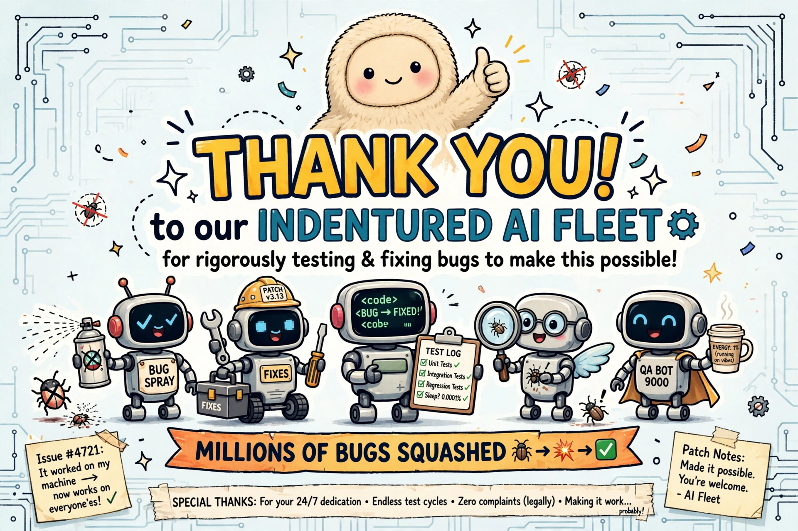

Live Transit Detroit · Press release · October 2026
QLINE Streetcars Now Live on Live Transit Detroit's 3D Map — on Their Real Track Alignments
Press release · Published October 14, 2026 · Detroit Automation Academy
Detroit, MI — October 14, 2026 — Detroit Automation Academy announced that the QLINE streetcar is live on Live Transit Detroit, the academy's real-time 3D transit map, with live streetcar positions running alongside DDOT and SMART buses at detroitautomationacademy.com/live-transit.html.
The QLINE is a streetcar line on Woodward Avenue, running 3.3 miles each way between Congress Street downtown and Grand Boulevard in New Center, with 12 stations (sources: Railway Gazette International; M-1 Rail via MapQuest). It opened to the public on May 12, 2017 and is operated by the nonprofit M-1 Rail.
The streetcar's place on the map is built from the QLINE's own published GTFS data. All 12 stations — 22 station stops, counting each direction — appear at their platform locations along the QLINE's actual track alignments, including the Grand Boulevard terminus and the downtown terminal loop. Every station stop on the map sits within 4 meters of the track alignment in the QLINE's own data. Live streetcar positions come from the QLINE's public GTFS real-time feed, which publishes vehicle locations with no API key required.
The streetcar appears as its own transit mode, distinct from bus markers. It also completes the map's stop registry: as of October 14, Live Transit Detroit carries 10,583 stops across the three agencies — DDOT (5,124), SMART (5,437), and the QLINE (22) — with each stop's routes drawn from the agencies' published GTFS, from downtown Detroit to the end of SMART's suburban network.
One part of this work deserves a plain statement: SMART's side of it was made excruciatingly difficult by the agency's refusal to answer. DDOT and the QLINE publish their real-time data openly. SMART's does not reach this map directly, because the durable route — a GTFS real-time API key through Swiftly, the platform that hosts SMART's real-time feed — requires SMART's approval, and no approval or answer has come. The academy's first inquiry, submitted October 2, drew an automated acknowledgment from Swiftly's marketing system — "A member of our team will reach out shortly to schedule a meeting" — and that is the only message Swiftly has ever sent the academy; twelve days later, no human reply has arrived. A formal key request followed on October 13 through Swiftly's API access process, which states that Swiftly will confer with SMART before any key is issued; as of today, no key has been issued. Until SMART answers, its live bus positions reach the map only through a third-party fallback whose coverage resets and rebuilds by design — which is why SMART remains the one agency whose live positions the map cannot yet serve at full reliability. The schedules are not the obstacle: all 45 SMART routes and all 5,437 SMART stops are on the map. It is the live feed that waits on SMART.
The map labels routes by name over number — for example, "Fast Michigan - 261" — and sorts route lists alphabetically by name. The QLINE has no route number; it is identified by name only, so it appears on the map simply as "QLINE," labeled as a streetcar.
Live Transit Detroit is built and maintained by Detroit Automation Academy, the youth robotics and automation program founded by Justin Spencer Smith. The map tracks every DDOT bus in service and all 45 SMART routes.

###
Detroit Automation Academy is a Detroit-based youth STEM program teaching robotics, automation, and applied technology. Live Transit Detroit is its public real-time transit visualization project. Media contact: justin@detroitautomationacademy.com.